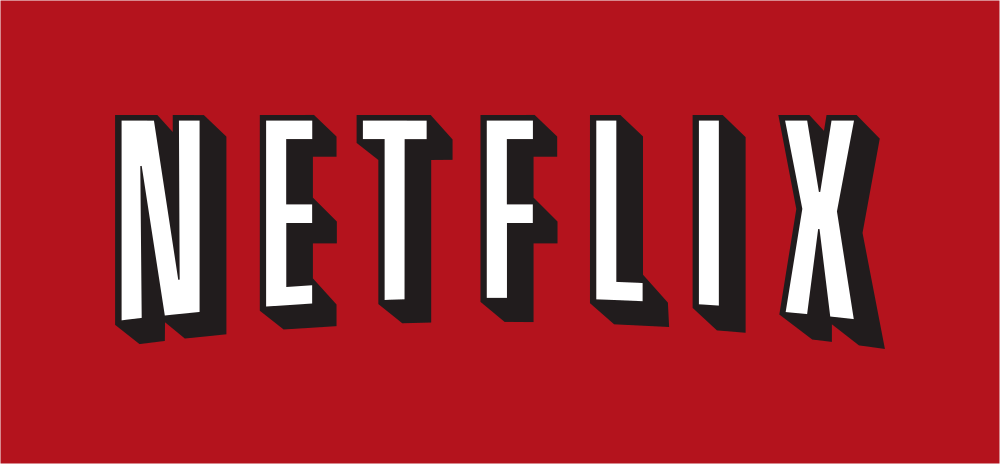
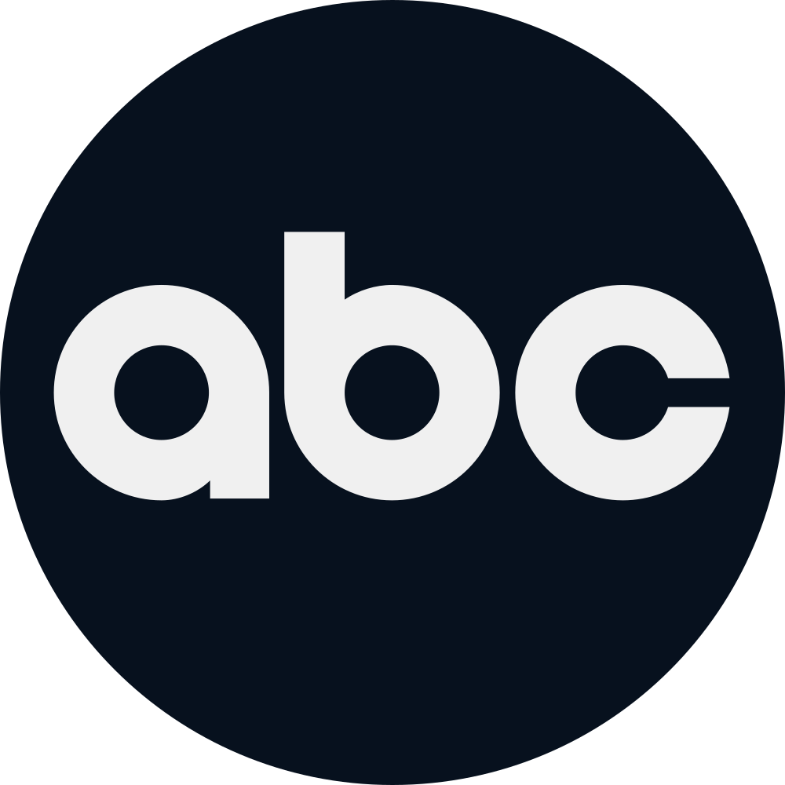
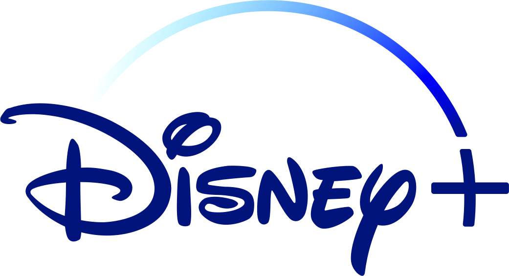

The Netflix Defenders shows (2015 to 2019) started out apart from the films. Kingpin in Hawkeye, Matt Murdock in No Way Home, then Daredevil: Born Again and One Last Kill brought them into the MCU. The ABC, Hulu and Freeform shows are here too, and most of them never meet the films.